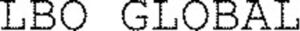

Trade Mark Journal No.2025/043 24 October 2025
WO0000001858811 (35,41,45)
Office of origin: France
Date of International Registration:3 March 2025
Date of designation in the UK:
3 March 2025

International priority date claimed: 23 October 2024
(France)
(5092374)
- Class 35
- Organization and conducting of commercial events; customer club services for commercial, promotional and/or advertising purposes; organization and conducting of promotional events; arranging business introductions; advice regarding company organization; organization of trade fairs or professional fairs; organization of presentations for commercial exchanges; organization and conducting of business meetings; organization of events for commercial and advertising purposes; advertising; advertising services; online advertising; advertising by mail order; advertising arranging; business promotion [advertising]; advertising in magazines; advertising, including online advertising on a computer network; advertising of commercial web sites; dissemination of advertising on the Internet; advertising and promotional services; dissemination of advertising for others; commercial administration;cost price analysis; market study and market study analysis services; collection and systematization of data in a central file; computer file management; information search in computer files (for others).
- Class 41
- Training with respect to investment; Training relating to financial matters; training; organizing and conducting training workshops, colloquiums, conferences, congresses, seminars and symposiums, particularly with respect to financing and companies; organizing exhibitions for cultural or educational purposes and organizing competitions (education or entertainment), particularly with respect to financing and companies.
- Class 45
- Legal assistance in the drawing up of contracts; litigation assistance; conducting of legal feasibility studies; expert advice with respect to legal matters; legal advice; legal advice in the field of taxes; providing expert legal opinions; organizing the provision of legal services; conducting of legal compliance audits; legal assistance services; advice, information and support services with respect to legal matters; searching for legal information; legal services in the context of due diligence checks; legal services relating to business operations; paralegal services.
LR Advisory
Representative: Monsieur LAIDEBEUR Olivier NEOMARK Sàrl - LAIDEBEUR & PARTNERS, 4, rue d'Arlon, L-8399 Windhof, LUXEMBOURG